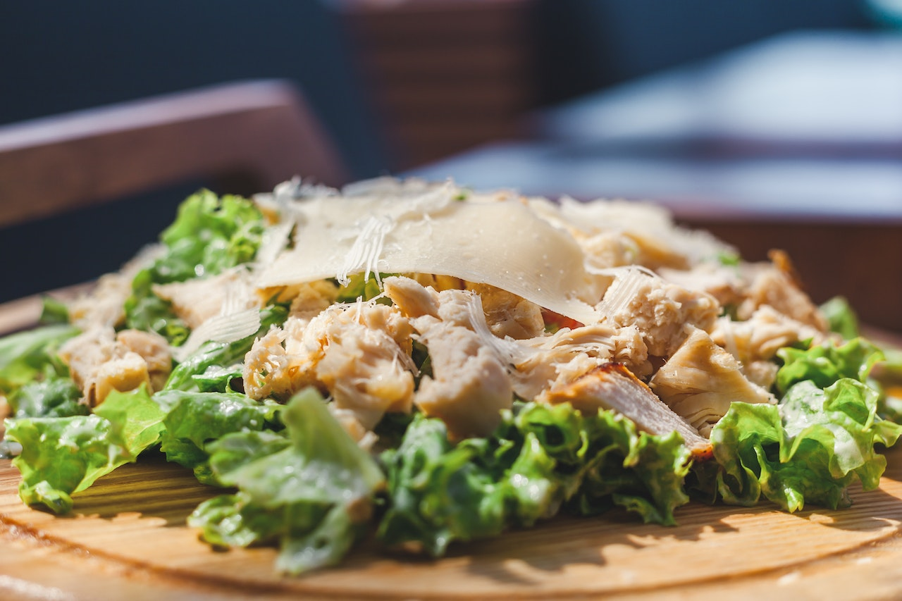

Ensalada Cesar
La opción clasica, siempre rendidora y con un toque proteico que te hara sentir mas fuerte.
La ensalada contiene:
Lechuga, 200g de pollo, huevos pasados por agua, ajo, salsa inglesa o Worcestershire, zumo de limón, aceite de oliva virgen extra, queso Grana Padano rallado, costrones de pan, sal y pimienta negra recién molida.
